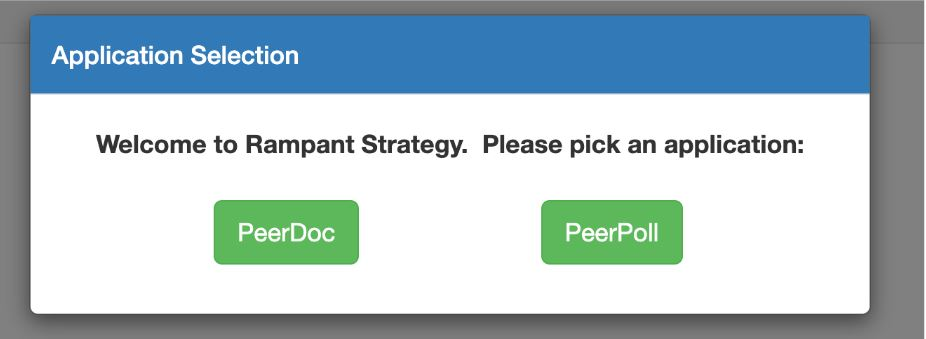
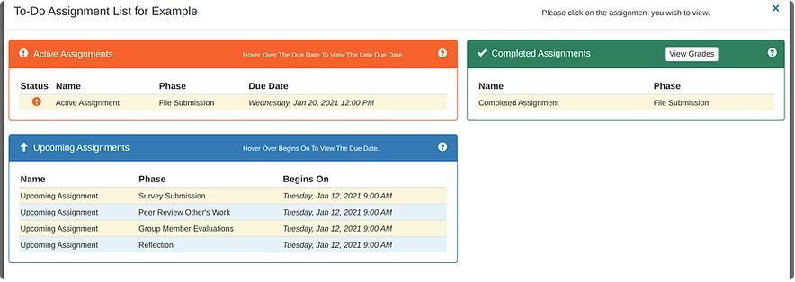
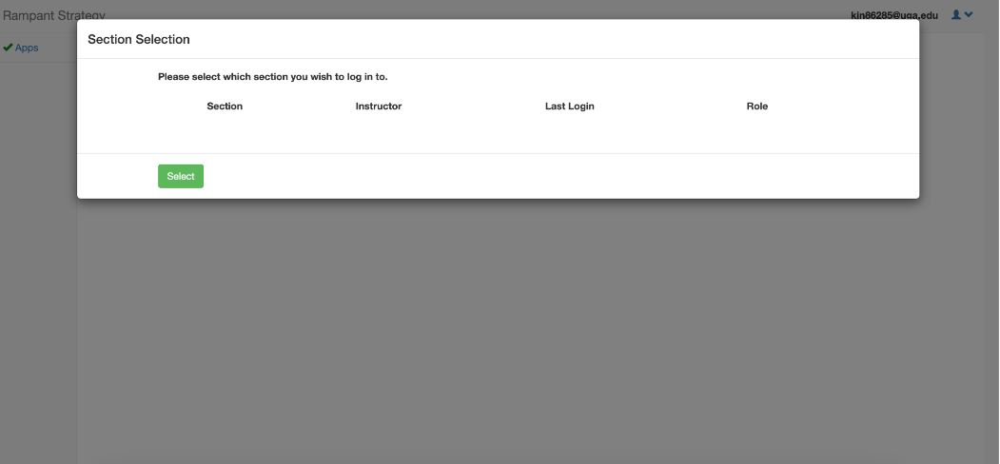

Our Problem
The lack of accessible and effective communication between students and instructors in educational settings is a significant problem. Educational technology is meant to aid in student learning and interaction with the instructor, but Rampant Strategy, a tool for educational technology, fails to facilitate communication effectively. This is due to its unclear signifiers and on-screen alerts, which create confusion for students regarding the available functions. The poor user interface of Rampant Strategy inhibits students from participating in class polls, creates a barrier for instructors conducting class, wastes valuable class time, affects students' grades, and excludes essential classroom and assignment announcements.
Problem Interaction using the Seven Stages of Action
In a typical interaction, tstudent would plan to navigate to the PeerPoll app using the side navigation bar. They would specify that they would click through the switch app button signified by the word “Apps”, select the PeerPoll button, and then click the “Receive poll” button so that it pops up on their screen. In performing this action, the student would navigate successfully to PeerPoll, retrieve the poll question, answer the questions, and submit it to the instructor using the “Submit” button. Perceiving this execution, the student would see the confirmation that their answer has been properly recorded and would feel relieved that they completed it in time because polls are only open for a short period of time. Interpreting their success, the student reflects on the fact that they felt rushed to get to the PeerPoll app and anxious that the button would not receive the poll in time, but they were relieved when they saw the question and were able to submit their answer. Finally, the student compares their execution with their goal and feels like they met their goal even though they felt rushed in its execution.
Where does the confusion lie?
Confusion between signifiers and affordances in Rampant Strategy could considerably affect the user’s goals in interacting with the program. A student attempting to answer a poll in class may experience confusion due to the unclear signifiers, preventing them from participating in the class fully.
A more intuitive interface that leaves very little room for confusion would benefit students, professors, and teaching assistants. Teachers and teaching assistants would be more efficient in conducting class and grading assignments, while students could participate in class without experiencing user error or technical difficulty.
Screenshots of Rampant Strategy UI
Navigation between PeerDoc and PeerPoll

The active assigment page is cluttered and includes unnecessary information
No signifiers present to indicate you need to click on individual assignments to view details
Switching Sections does not afford exiting the window without changing sections, there is no signifier